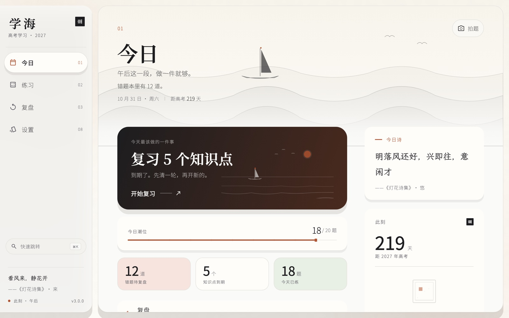

下载 · 3.0.0
现在可以装
当前只有 macOS。这一页放安装包、完整校验值、装不上的三种情况和 2.5 以来的历史版本。

当前版本
3.0.0 「墨潮」
504230b47b38a981a4726c56a9cccd43a5b8783eff63be23bc7c9b8ea6ac41dc
下载之后先对一次。在终端对下载的文件跑 shasum -a 256 学海-3.0.0-macOS.dmg，结果与上一行一致再打开。


安装
三步，一分钟
第一次打开会被 macOS 拦一次，这是对非 App Store 来源应用的默认行为，不是安装包坏了。
拖进「应用程序」
双击打开 dmg，把窗口里的「学海」拖到 Applications 文件夹。之后运行的是拖出来的副本，磁盘映像可以推出。
被拦下就右键打开
在「应用程序」里右键（或按住 Control）点「学海」，选「打开」。在对话框里再点一次「打开」——这是 macOS 的默认拦截，确认一次之后不再询问。
登录后进今日页
打开后应用会先问邮箱；完成后落到今日页：今天的潮位、最该做的一件事、以及暗下来会变化的天光。
数据只存本机。做题记录与每次作答的事件都存在本机、按账号隔离，导出由你决定。唯一需要联网的功能是拍照搜题，它走云端 OCR 与云端题库检索。
历史
2.5 以来的版本
2.8 起只出 macOS。需要 Windows、安卓或 iOS 的，最近能拿到完整四端的是 2.6.0 与 2.5.0。
| 版本 | 平台 | 文件 | 体积（字节） |
|---|---|---|---|
| 3.0.0 | macOS | 学海-3.0.0-macOS.dmg | 101,778,679 |
| 2.9.0 | macOS | 学海-2.9.0-macOS.dmg | 102,096,896 |
| 2.8.1 | macOS | 学海-2.8.1-macOS.dmg | 102,071,985 |
| 2.8.0 | macOS | 学海-2.8.0-macOS.dmg | 102,071,970 |
| 2.6.0 | macOS | 学海-2.6.0-macOS.dmg | 40,401,643 |
| 2.6.0 | Windows x64 | 学海-2.6.0-Windows-x64.zip | 30,851,609 |
| 2.6.0 | Android arm64 | 学海-2.6.0-Android-arm64.apk | 55,050,400 |
| 2.6.0 | iOS | 学海-2.6.0-iOS.ipa | 24,682,677 |
| 2.5.0 | macOS | 学海-2.5.0-macOS.dmg | 38,899,451 |
| 2.5.0 | Windows x64 | 学海-2.5.0-Windows-x64.zip | 29,476,153 |
| 2.5.0 | Android arm64 | 学海-2.5.0-Android-arm64.apk | 53,630,291 |
| 2.5.0 | iOS | 学海-2.5.0-iOS.ipa | 23,308,533 |
历史版本暂不提供公开下载；需要请在应用内反馈。iOS 包是签名 ipa，描述文件 7 天到期；安卓只发 arm64 一个包。2.0–2.4 在「分发/历史/」里按索引取，站点不逐个开直链。
常见问题
装之前最容易卡住的四个问题
为什么只有 macOS？
2.8 起只出 macOS（2026-10-28 的指令），3.0 也只在这一端验证过。Windows、安卓、iOS 停在 2.6.0。Windows 包装需要 CI 或 Windows 机器，macOS 上出不了；四端恢复需要明确要求。
能覆盖安装吗？
能。把新版本拖进「应用程序」替换旧的即可。做题记录存在本机应用数据目录，覆盖安装不会清除。想留一份底，先用学习记录里的「导出 JSONL」。
iOS 描述文件为什么 7 天到期？
2.6.0 的 iOS 包是签名 ipa，描述文件 7 天到期，到期后要重新签名才能装。它只适合短期自测，不适合长期放在一台手机上。
数据会上传吗？
做题记录与作答事件不会自动上传，只存本机、按账号隔离；导出 JSONL 是手动操作。拍照搜题是明确例外：题目图片会发到云端 OCR 与题库检索。